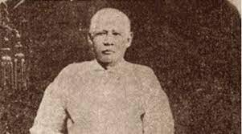

Francisco Mercado
1818–1898
He was a prosperous farmer, entrepreneur, and a descendant of Chinese immigrants to the Philippines. Francisco's success allowed him to provide a comfortable life for his family and to send his children to good schools.
1818–1898
He was a prosperous farmer, entrepreneur, and a descendant of Chinese immigrants to the Philippines. Francisco's success allowed him to provide a comfortable life for his family and to send his children to good schools.

Teodora Alonso Realonda
1827–1911
Teodora was a highly educated woman from a prominent family in Laguna province. Despite facing challenges and discrimination due to her gender and mixed-race heritage, she was deeply involved in her children's education and instilled in them a strong sense of pride in their Filipino identity.
1827–1911
Teodora was a highly educated woman from a prominent family in Laguna province. Despite facing challenges and discrimination due to her gender and mixed-race heritage, she was deeply involved in her children's education and instilled in them a strong sense of pride in their Filipino identity.

Saturnina Rizal
1850–1913
As the eldest sibling, Saturnina played a maternal role in the family after their mother's eyesight began to fail. She pursued a career in teaching and later married Manuel T. Hidalgo.
1850–1913
As the eldest sibling, Saturnina played a maternal role in the family after their mother's eyesight began to fail. She pursued a career in teaching and later married Manuel T. Hidalgo.
Paciano Rizal
1851–1930
Paciano was a significant influence on José Rizal, serving as his confidant and mentor. He actively supported the nationalist cause and became a general in the Philippine Revolution.
1851–1930
Paciano was a significant influence on José Rizal, serving as his confidant and mentor. He actively supported the nationalist cause and became a general in the Philippine Revolution.
Narcisa Rizal
1852–1939
Narcisa was known for her charitable deeds and compassion. She married Antonio López, a government official, and continued to support her family financially and emotionally.
1852–1939
Narcisa was known for her charitable deeds and compassion. She married Antonio López, a government official, and continued to support her family financially and emotionally.

Olympia Rizal
1855–1887
Olympia's premature death at the age of 22 deeply affected the family. She was remembered fondly for her kindness and gentle nature.
1855–1887
Olympia's premature death at the age of 22 deeply affected the family. She was remembered fondly for her kindness and gentle nature.